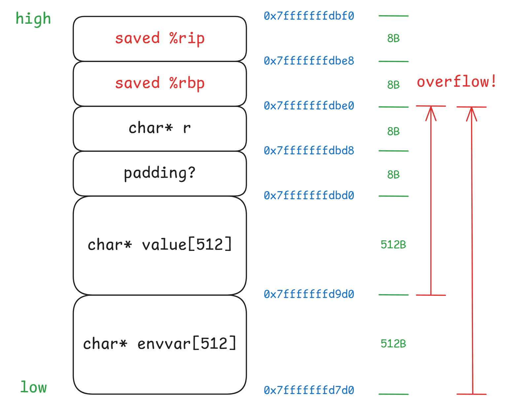
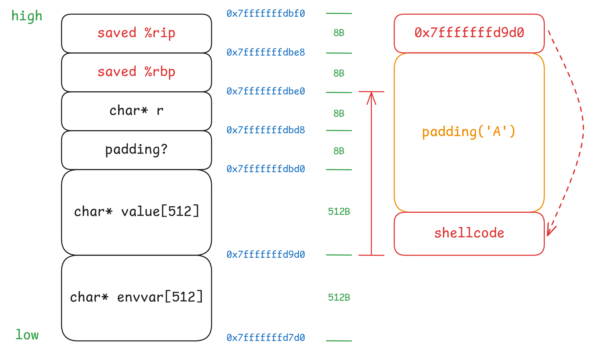
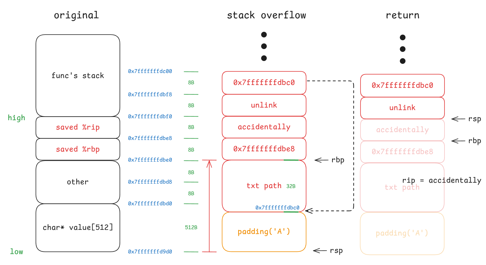
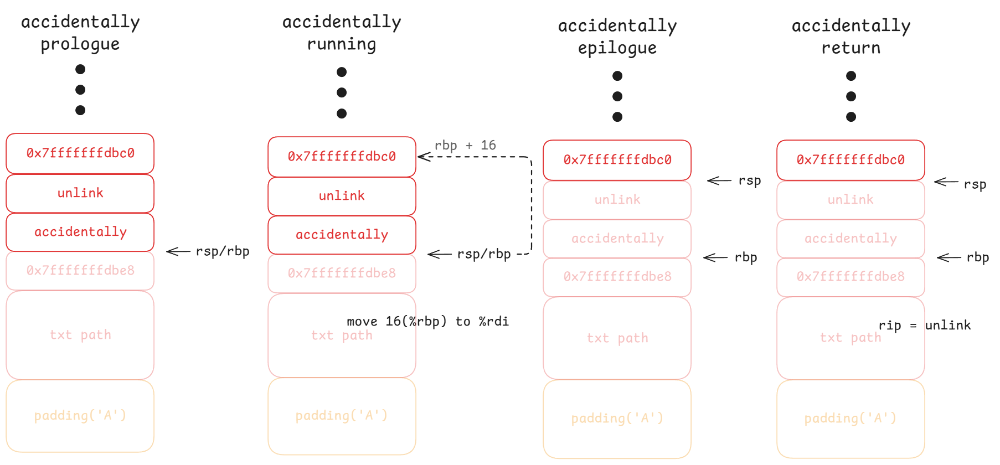

Lab 1: Buffer overflows
0x00. Introduction
MIT 6.858 是面向高年级本科生与研究生开设的一门关于计算机系统安全 (secure computer security) 的课程，内容包括 threat models、attacks that compromise security、techniques for achieving security。
这个课程一共有五个 Lab：
- Lab1：缓冲区溢出 (buffer overflow)
- Lab2：权限分离与服务侧沙箱 (privilege separation and server-side sandboxing)
- Lab3：符号执行 (symbolic execution)
- Lab4：浏览器安全 (browser security)
- Lab5：安全的文件系统 (secure file system)
前四个 Lab 主要是基于 MIT 开发的一个叫 zookws 的 web server 完成的
0x01. Environment Setup
详见 Lab1
MIT 提供了一个 course VM image，其中有着一个 Ubuntu 22.04 的系统，登录的用户名为 student，密码为 student，下载解压后根据自身的本地环境进行对应的操作。
我是用的是 VMware 运行：新建虚拟机 → 稍后安装操作系统 → 选择系统 Linux > Debian 9.x 64-bit → 选择现有的虚拟磁盘→选择 6.858-x86_64-v24.vmdk 即可。
由于系统没有图形界面，故建议使用 ssh 连接虚拟机来做实验。可以使用 ip addr show dev eth0 来查看虚拟机的 IP 地址。
实验文件通过 Git 版本控制系统分发。课程 Git 仓库地址：https://github.com/mit-pdos/6.566-lab-2024
1 | # 克隆实验代码 |
注意：必须将代码克隆到 lab 目录中，因为路径名的长度在本实验中很重要。
确保可以成功编译 zookws web 服务器：
1 | make |
编译后会生成以下关键文件：
zookd-exstack：具有可执行栈的版本，便于注入可执行代码zookd-nxstack：具有不可执行栈的版本，需要更复杂的攻击方式zookd-withssp：启用栈保护的版本
为了以可预测的方式运行 web 服务器（确保每次运行时栈和内存布局相同），需要使用 clean-env.sh 脚本：
1 | # 在端口 8080 上启动服务器 |
在浏览器中访问：http://IPADDRESS:8080/
其中 IPADDRESS 是虚拟机的 IP 地址（通过 ip addr show dev eth0 查看）。
- zookd：接收 HTTP 请求的组件，用 C 语言编写，提供静态文件服务并执行动态脚本
- HTTP 相关代码：位于
http.c文件中 - 动态脚本：用 Python 编写（本实验不需要理解，漏洞只存在于 C 代码中）
- 参考二进制文件：提供在
bin.tar.gz中，用于评分 - 测试命令：
make check-lab1将使用clean-env.sh和bin.tar.gz检查提交
行尾序列问题
所有文件都是 \r\n (CRLF) 行尾序列，在 Linux 环境下导致脚本执行失败
使用dos2unix命令或文本编辑器将所有文件转换为 \n (LF) 行尾序列
静态文件权限问题
zookd 服务器将 css, html, ico 等静态文件当成可执行程序运行
使用chmod -x *.css *.html *.ico将静态文件权限修改为不可执行
0x02. Part 1: Finding buffer overflows
In the first part of this lab assignment, you will find buffer overflows in the provided web server.
I. What is a stack overflow attack?
虽然 Aleph One 在 1996 年发表的经典文章《Smashing the Stack for Fun and Profit》长期以来一直是学习缓冲区溢出攻击的首选资料，但自那时起世界已经发生了很大变化。原始的攻击方法通常在现代 64 位机器上不再有效。这部分原因是现在默认启用了许多新的防御机制，但即使禁用这些防御机制，64 位执行环境本身也带来了新的挑战。
The Stack Region
在讨论 64 位环境中的具体变化之前，让我们先回顾一下什么是（栈）缓冲区溢出攻击。
考虑一个简单的 C 程序：
1 |
|
当程序运行时，它会将内存的一部分保留作为栈。程序使用栈来跟踪其运行状态，例如局部变量的值，函数返回地址以及其他状态信息。
栈从高内存地址开始，新项目被压入栈的较低内存地址，每个函数调用都会获得自己的栈帧。
当 copy 函数被调用时，栈的结构如下：
1 | .-------0x00-------. |
后压入栈的内容位于栈的”更高”位置，但在”更低”的内存地址
栈帧至少包含两个关键部分：
- 函数局部变量所需的内存（如
copy中的buffer） - 函数应该返回的地址
这种栈结构是理解缓冲区溢出攻击的基础，攻击者可以通过溢出局部变量来覆盖关键的栈数据，如返回地址。
The Calling Convention
为了更详细地理解栈的工作原理，我们需要深入研究一些汇编代码（使用 AT&T 语法）。具体来说，让我们看看在 x64（Intel 和 AMD 的 64 位 CPU 使用的 64 位架构）上，当 main 调用 copy 时会发生什么：
1 | # 这是我们 C 代码的汇编版本，稍作修改以便于理解 |
1 | 从另一个角度显示栈帧结构： |
The Function argument pass
x64 调用约定规定函数的第一个参数存放在 %rdi 寄存器中。因此：
1 | # 将 str 指针的值存储到局部变量 str 的内存中 |
与经典的《Smashing the Stack for Fun and Profit》文章相比，有一个重要区别：函数参数不再通过栈传递，而是通过寄存器传递。这是现代 64 位架构的一个重要特点，会影响我们构造缓冲区溢出攻击的方式。
Buffer Overflows
有了前面的背景知识，我们可以很容易理解栈上缓冲区溢出的攻击路径。具体来说，考虑一下如果我们向 buffer 写入超过 16 字节的数据会发生什么。
溢出的根本原因：
1 | void copy(char *str) { |
strcpy 函数的特点：
- 持续复制字节直到遇到值为
0x00的字节（空终止符） - 不检查目标缓冲区大小
- 不验证用户输入
argv[1]是否短于 16 字节
当 buffer 被溢出时，我们称之为缓冲区溢出。溢出的后果完全取决于缓冲区后面的内存中存储的是什么。
让我们重新审视水平栈图：
1 | 内存底部 内存顶部 |
第一阶段：覆盖 saved %rbp
- 当输入超过 16 字节时，首先覆盖保存的
%rbp值 - 这个值来自
main函数，覆盖它通常不会立即造成问题
第二阶段：覆盖返回地址
- 继续溢出会覆盖返回地址
- 这是
copy函数执行ret指令时要跳转的地址 - 这是攻击的关键目标
场景1：覆盖为垃圾数据
1 | # 输入包含大量 'A' 字符 |
- 返回地址被覆盖为
0x4141414141414141（’A’ 的 ASCII 码） - 程序尝试跳转到这个无效地址
- 结果：程序崩溃（通常是段错误）
场景2：精心构造的攻击
1 | 输入: [16字节填充] + [8字节覆盖rbp] + [8字节恶意地址] |
- 将返回地址覆盖为有效的代码地址
- 指向攻击者想要执行的代码
- 结果：代码执行控制权被劫持
攻击者可能希望跳转到：Shell代码, 恶意函数, 系统调用!
1 | 正常情况： |
Shell Code
最基本且最容易理解的栈溢出攻击涉及将我们自己的代码注入到程序的内存中，然后用该内存的地址覆盖返回地址，这样当函数返回时就会执行我们的代码。
攻击示意图：
1 | 内存底部 内存顶部 |
攻击步骤：
- 用恶意代码填充缓冲区：将我们想要执行的代码放入
buffer中 - 覆盖返回地址：将返回地址覆盖为
buffer的地址 - 执行攻击代码：当函数返回时，跳转到我们的代码
这种代码通常被称为 shell code，因为我们通常想要启动一个 shell，然后可以用它来发出进一步的命令。具体来说，我们放在缓冲区中的是 CPU 知道如何运行的编译汇编代码。
虽然基本概念与经典的《Smashing the Stack for Fun and Profit》中描述的相同，但我们需要对 64 位程序进行一些调整：
1. 系统调用约定变化
根据 man 2 syscall 的输出，64 位系统调用约定与 32 位有所不同：
1 | # 32位系统调用 |
参数传递方式：
- 64位：参数通过
%rdi,%rsi,%rdx等寄存器传递（与普通函数相同） - 32位：参数通过栈传递
2. 寄存器使用调整
由于不同的寄存器用于参数传递，需要调整临时寄存器的使用：
- 避免覆盖后续需要用作参数的寄存器值
- 例如：避免使用
%esi作为临时寄存器，因为%rsi是第二个参数寄存器
3. 系统调用号更新
64位 Linux 中的系统调用号与 32 位不同：
1 | # 示例：使用新的系统调用号 |
优势：execve 和 exit 的代码都不包含零字节，可以直接使用。
Shell Code 设计要点:
- 避免空字节：shell code 不能包含
\0，否则会被strcpy截断 - 位置无关代码：代码应该能在任何内存位置运行
- 紧凑性：代码应该尽可能短小，适应有限的缓冲区空间
- 功能性：通常执行
execve("/bin/sh", ...)来获取 shell 访问权限
完整的 64 位 execve shell code 示例如下:
1 | #include <sys/syscall.h> |
从本质上，合法的
ret指令会返回到.text段中继续执行指令。不合法的ret指令会返回到理应不可执行的stack中执行指令。所以传统栈溢出攻击有一个前提: OS 认为栈是可以执行的，或者说不会刻意检查。
Writing an Exploit
有了前面的背景知识，我们现在准备对一个真实程序执行第一次攻击。我们将让 C 程序稍微复杂一些，使攻击不那么明显。具体来说，程序现在（据说）打印它收到的每个输入的前 128 个字符：
1 |
|
然后编译（关于为什么要这样做，参见 TODO 部分）：
1 | $ gcc -g -fno-stack-protector -z execstack vulnerable.c -o vulnerable -D_FORTIFY_SOURCE=0 |
编译选项说明：
-g：包含调试信息-fno-stack-protector：禁用栈保护-z execstack：使栈可执行-D_FORTIFY_SOURCE=0：禁用缓冲区溢出检查
现在我们需要构造正确的输入来溢出 buffer。特别是，我们需要知道：
- 将返回地址设置为什么值
- 在开始写入返回地址之前需要写入多少字节
使用 GDB 进行动态分析
为了找到这些信息，我们将使用 GDB，这是一个在低级别调试程序的便利工具。
首先，启动我们的脆弱程序：
1 | $ env - setarch -R ./vulnerable |
参数说明：
env -使用干净的环境变量，环境变量存储在栈的高地址趋于，会影响栈的布局。setarch -R禁用地址空间随机化，现代 Linux 系统中默认开启 ASLR，每次栈的基址会发生变化。
在另一个终端中，启动 GDB：
1 | $ gdb -p $(pgrep vulnerable) |
这将找到名为 vulnerable 的程序的进程 ID，并将调试器附加到它。
GDB 调试步骤：
设置断点并继续执行：
1
2
3
4(gdb) b first128
Breakpoint 1 at 0x55555555516b: file x.c, line 7.
(gdb) c
Continuing.输入测试数据触发断点：
当输入一些数据到等待的 vulnerable 程序并按回车时：1
2Breakpoint 1, first128 (str=0x555555558060 <input> "x\n") at x.c:7
7 strcpy(buffer, str);获取 buffer 地址：
1
2(gdb) print &buffer[0]
$1 = 0x7fffffffec90 ""获取返回地址的存储位置：
1
2
3
4
5
6
7
8
9
10
11(gdb) info frame
Stack level 0, frame at 0x7fffffffed20:
rip = 0x55555555519f in first128 (vulnerable.c:7);
saved rip = 0x5555555551e8
called by frame at 0x7fffffffed40
source language c.
Arglist at 0x7fffffffed10, args:
str=0x555555558040 <input> "dmx\n"
Locals at 0x7fffffffed10, Previous frame's sp is 0x7fffffffed20
Saved registers:
rbp at 0x7fffffffed10, rip at 0x7fffffffed18
注意 rip at 0x7fffffffed18，这就是存储的返回地址的地址！
编写攻击利用脚本
现在我们有了编写攻击字符串所需的一切。手动编写会有点痛苦，所以让我们写一个小的 Python 程序来帮助：
1 | #!/usr/bin/env python3 |
攻击载荷构造分析：
1 | payload = [shellcode] + [padding] + [buffer_address] |
- shellcode 部分：二进制形式的恶意代码
- 填充部分：用 ‘A’ 填充，直到到达返回地址存储位置
- 地址覆盖：将返回地址覆盖为 buffer 的地址
执行攻击：
1 | $ ./exploit.py | env - setarch -R ./vulnerable |
执行后看起来很空，但这是正常的！尝试输入 ls… 如果成功，你应该能看到 shell 提示符！
64-bit Considerations
32 位和 64 位模式下缓冲区溢出攻击有两个主要差异，需要特别注意，否则会导致攻击失败。
Zeroes in addresses
大多数 64 位地址在其最高有效字节中都包含 0x00，这意味着我们通常不能直接写入它们；像 strcpy 和 strcat 这样的常见函数将 \0 视为字符串的结尾，因此会在遇到零字节时停止写入。
好消息是，在小端序系统中，最高有效字节排在最后（即在较高的内存地址），所以通常这不会成为问题。终止的 \0 也会被复制，这可能就是我们需要的全部。在某些幸运情况下，我们试图覆盖的位置已经有所需数量的 0x00，因此提前停止是可以接受的（只要应用程序本身不添加额外内容）。
如果需要在地址后写入更多内容，或者地址恰好是一个低地址，其中多个前导字节为 0x00，而被覆盖位置之前没有这些零字节，那么就需要寻找其他方法。
这在 32 位系统上不是一个大问题。虽然地址可能意外包含 0x00，但相对较少发生。在 64 位系统上，几乎每个地址都会出现这种情况！
Arguments in Registers
在 32 位系统（特别是 i386）上，函数的调用约定相对自由。最常见的是 cdecl，其中函数参数通过栈传递。具体来说，参数在 call 指令之前按从右到左的顺序压入栈。
这有一个非常巧妙的副作用，你可以通过改变栈上的内容来操纵函数的参数。例如，绕过 W^X（参见禁用现代防御）的一个巧妙方法是进行 “return to libc” 攻击。你不用 shellcode 的地址覆盖返回指针，而是在那里放置来自 libc 的 execve 地址。然后你会操纵栈上的各种值，这样当前函数返回到 execve 并查看栈获取参数时，它会看到像 /bin/sh 这样的参数。
“遗憾的是”，在 x64 中，调用约定发生了相当大的变化。在 x64 中，使用 System V AMD64 ABI，其中参数主要通过寄存器传递（这是一个很好的视觉解释）。这破坏了传统的 return-to-libc 攻击，因为你不能再通过操纵栈来改变 libc 函数看到的参数（这是缓冲区溢出所能做的全部）。有一些方法可以绕过这个问题，例如使用 “借用代码块” 技术，以及返回导向编程的一般概念，但这些攻击要难得多。
Finding Buffer Overflows
如前所述，缓冲区溢出是由于在缓冲区中填充超过其预期容量的信息造成的。由于 C 语言没有任何内置的边界检查，溢出通常表现为写入超过字符数组末尾的位置。标准 C 库提供了许多用于复制或追加字符串的函数，这些函数不执行边界检查。它们包括：strcat()、strcpy()、sprintf() 和 vsprintf()。这些函数操作以空字符结尾的字符串，并且不检查接收字符串的溢出。gets() 是一个从 stdin 读取一行到缓冲区的函数，直到遇到终止换行符或 EOF。它不执行缓冲区溢出检查。如果你要匹配非空白字符序列（%s），或匹配来自指定集合的非空字符序列（%[]），而 char 指针指向的数组不够大，无法接受整个字符序列，并且你没有定义可选的最大字段宽度，那么 scanf() 系列函数也可能成为问题。如果这些函数中任何一个的目标是静态大小的缓冲区，而其他参数以某种方式源自用户输入，那么你很可能能够利用缓冲区溢出。
我们发现的另一个常见编程结构是使用 while 循环从 stdin 或某个文件一次读取一个字符到缓冲区，直到到达行尾、文件尾或其他分隔符。这种类型的结构通常使用以下函数之一：getc()、fgetc() 或 getchar()。如果在 while 循环中没有明确的溢出检查，此类程序很容易被利用。
总而言之，grep(1) 是你的朋友。免费操作系统及其实用程序的源代码是现成可用的。一旦你意识到许多商业操作系统实用程序都源自与免费操作系统相同的源代码，这个事实就变得相当有趣。使用源代码，伙计。
使用 grep 查找潜在漏洞：
1 | # 在源代码中搜索危险函数 |
这种源代码审计方法在发现真实软件中的安全漏洞方面非常有效，特别是在开源软件中，因为源代码的可用性使得安全研究人员能够进行深入的代码分析。
Disabling Modern Defenses
当试图在现代机器上进行缓冲区溢出攻击时，你需要处理几种防护措施：
Stack Canaries：编译器在二进制文件中注入代码片段，在函数的局部变量和下一个栈帧之间（至关重要的是，在返回地址之前）放置一个特殊值。就在函数返回之前，它检查 Stack Canaries 是否仍然具有正确的值，只有这样才会发出 ret 指令。这挫败了上述攻击，因为在我们试图到达返回地址的过程中，总是会用垃圾数据覆盖 Stack Canaries! 要在 gcc 中禁用 Stack Canaries ，传递 -fno-stack-protector 参数。
ASLR：这种机制被称为 ASLR，大致意味着内核会在程序启动时随机化程序在内存中的位置。这通常包括构成程序代码的指令、栈、堆，以及任何动态链接库的位置。启用此功能后，你不能再（轻易地）找出所需的任何地址，因此不知道用什么来覆盖返回地址！你可以通过 setarch -R 调用程序来告诉内核为给定程序禁用 ASLR。较旧版本的 setarch 还要求你将 "$(uname -m)" 作为第一个参数传递。注意这些解决方案是不够的：
- 仅使用
-no-pie是不够的，因为动态链接库仍然是随机化的（如果你关心 return-to-libc） - 仅使用
-static是不够的，因为程序本身的地址仍然是随机化的 - 即使两者都用，你的栈和堆位置仍然是随机化的
W^X：这是一个相当简单的防护机制，其中进程中的所有内存要么是可写的（如栈），要么是可执行的（如程序代码）。当启用此功能时（默认情况下是启用的），上面讨论的栈溢出将不起作用，因为你的 shell code（然后位于栈上）没有标记为可执行。当你试图返回到它时，CPU 会简单地拒绝继续。你可以使用 execstack 禁用此功能，或者在 gcc 中通过 -z execstack 链接你的程序。
Fortified Source：默认情况下，gcc 启用源码强化，当 gcc 能够确定所需边界时，它会用安全检查包装已知有问题的函数，如 strcpy 或 strcat。当这些检查到位时，试图溢出缓冲区的尝试可能会以如下方式终止你的程序：
1 | *** buffer overflow detected ***: ./vulnerable terminated |
要解决这个问题，只需传递 -D_FORTIFY_SOURCE=0。
关闭这些防护可能看起来像作弊，在某种意义上确实如此，但在试图教授栈粉碎背后的基本思想时是有帮助的。事实上，通常可以用更高级的攻击绕过这些防护，尽管那些远远超出了本文档的范围。
完整的编译命令示例：
1 | # 禁用所有现代防护的编译命令 |
这些防护机制的存在说明了现代系统安全的演进，但理解如何绕过它们对于学习底层攻击原理仍然很重要。在实际的安全研究和渗透测试中，攻击者会使用更复杂的技术来绕过这些防护。
II. Read the source Code
zookd.c
- 启动监听
- zookd 首先通过
start_server创建监听 socket，绑定端口，准备接受客户端连接。
- 等待客户端连接
- 在
run_server中，循环调用accept等待客户端的连接。
- 多进程处理请求
- 每当有新连接到来，
fork一个子进程，专门处理该客户端请求。 - 子进程调用
process_client，处理 HTTP 请求和响应。 - 父进程关闭自己的 fd，继续等待下一个连接。
- HTTP 请求处理
http_request_line处理 HTTP 请求报文的第一行，并设置环境变量。env_deseialize设置环境变量，一开始环境变量都存放在 char[] 中，此函数提取其信息并实际设置环境变量。http_request_headers处理 HTTP 请求报文其他头部信息，并设置环境变量。http_serve正式处理进行 HTTP 服务。
http.c
http_request_line
- 调用
http_read_line函数读取 HTTP 请求行（如GET /foo.html HTTP/1.0），将其解析并保存 - 设置环境变量
- 如果路径包含 ?，分离出查询字符串。
- 调用
url_decode函数对路径进行 URL 解码
假设客户端发送如下 HTTP 请求行：GET /cgi-bin/hello.py?user=alice HTTP/1.1
逐步解析并设置环境变量:
REQUEST_METHOD=GETSERVER_PROTOCOL=HTTP/1.1QUERY_STRING=user=aliceREQUEST_URI=/cgi-bin/hello.pySERVER_NAME=zoobar.org
http_request_headers
- 每次调用
http_read_line，循环读取每一行头部。 - 调用
http_parse_line解析头部行。 - 把解析出来的头部信息存入进程环境变量。
假设客户端发送如下 HTTP 请求头部:Host: localhost:8080User-Agent: Mozilla/5.0Accept: text/htmlCookie: session=dmx
逐行解析并设置环境变量:
HTTP_HOST=localhost:8080HTTP_USER_AGENT=Mozilla/5.0HTTP_ACCEPT=text/htmlHTTP_COOKIE=session=dmx
http_serve
根据客户端请求的路径，判断请求的资源类型，并调用相应的处理函数返回内容。
- 用
getcwd获取当前工作目录并设置环境变量。 - 拼接请求路径。
- 调用
split_path，设置 CGI 相关环境变量。 - 判断资源类型
- 如果是可执行文件（CGI 脚本），调用
http_serve_executable。 - 如果是目录，调用
http_serve_directory。 - 如果是普通文件，调用
http_serve_file。 - 如果都不是，调用
http_serve_none返回 404
III. Find potential stack overflow vulnerabilities
首先可能出现栈溢出的前提是定义了局部变量 char[*]，通过命令 grep -n "char.*\[.*\]" http.c 查找。
同时还需要伴随着不检查长度的库函数，通过命令 grep -n "strcpy\|strcat\|sprintf\|gets\|scanf" http.c 查找。
对比对比分析，可以锁定两个嫌疑人:
http_request_headers中的局部变量char value[512]http_request_headers中的局部变量char envvar[512]
如果头部名（去掉冒号）长度超过 507(512 - len(“HTTP_”)) 字节，会溢出 envvar。
如果头部值（空格后内容）解码后长度超过 512 字节，会溢出 value。
但是 ! 溢出不代表程序会崩溃，溢出一定会导致 undefined behavior，只有当溢出的内容覆盖到 saved %rsp/%rip 时，才会导致程序崩溃 !
1 | const char *http_request_headers(int fd) |
IV. Crash the web server!
First. Figure out the stack layout
1 | # 在后台启动服务器 |
栈的布局如下图所示:
Second. Construct an invalid HTTP request
由上图可知，想要实施栈溢出攻击并使 web 服务进程崩溃，可以有如下两种方法:
- 头部名长度超过 512 + 512 + 8 + 8 - 5(“HTTP_”) 字节
- 头部值长度超过 512 + 8 + 8 字节
由此完善实验提供的 exploit-template.py 程序:
1 | def build_exploit(shellcode: bytes) -> bytes: |
根据实验手册的指引，运行 make check-crash，通过测试（评测的原理是检查 /tmp/strace.log 当中是否有 SIGSEGV 字符串）。
1 | ./check-bin.sh |
0x03 Part 2: Code injection
In this part, you will use your buffer overflow exploits to inject code into the web server. The goal of the injected code will be to unlink (remove) a sensitive file on the server, namely /home/student/grades.txt.
I. Build a ShellCode
首先需要编写一个 shellcode，使其能够删除敏感文件 /home/student/grades.txt。
创建 shellcode 的汇编形式 shellcode.S，使其使其能够删除 /home/student/grades.txt 文件。汇编代码可以直接调用 SYS_unlink 系统调用，也可以调用 unlink() 库函数。
实验包提供了如下方式来验证 shellcode 的功能:
1 | student@6566-v24:~/lab$ make |
在调试 shellcode 时， strace 可能很有用。用法类似于 gdb，可以附加到正在运行的程序：
student@6566-v24:~/lab$ strace -f -p $(pgrep zookd-)
strace 会打印该程序执行的所有系统调用。如果你的 shellcode 没有生效，可以查找你期望 shellcode 执行的系统调用（比如 unlink），并检查参数是否正确。
编写 shellcode.S，具体如下:
1 | .globl main |
II. Construct a malicious HTTP request
构造一个恶意 HTTP 请求，我们采取溢出 value 的方式构造:
1 | stack_buffer = 0x7fffffffd9d0 |
整个 req_value 包含三个部分: shellcode + padding('A') + return addr。
通过控制 padding 的长度，将 saved %rip 的内容精准的用 shellcode 的起始地址覆盖，使函数返回时从 shellcode 开始执行，进而删除文件 /home/student/grades.txt。
溢出后的布局如下图所示:
0x04 Part 3: Return-to-libc attacks
Many modern operating systems mark the stack non-executable in an attempt to make it more difficult to exploit buffer overflows. In this part, you will explore how this protection mechanism can be circumvented.
I. Cleverly construct stack overflow
利用不可执行栈的缓冲区溢出的关键在于：即使你不能跳转到被溢出的缓冲区（因为它不可执行），但在 ret 指令跳转到你放在栈上的地址后，你依然可以控制程序计数器（PC）。通常，易受攻击服务器的地址空间中已经有足够的代码可以完成你想要的操作。
因此，要绕过不可执行栈，你首先需要找到你想执行的代码。这通常是标准库（libc）中的某个函数，比如 execve, system, unlink。然后，你需要安排栈和寄存器的状态，使其符合调用该函数时所需的参数。最后，你需要让 ret 指令跳转到你在第一步找到的函数地址。这种攻击通常被称为 return-to-libc 攻击。
return-to-libc 攻击的一个难点在于，你需要把参数传递给你想调用的 libc 函数。x86-64 的调用约定使这变得有挑战性，因为前6个参数是通过寄存器传递的。例如，第一个参数必须放在 %rdi 寄存器中（参见 man 2 syscall，里面有调用约定的说明）。所以，你需要一条指令把第一个参数加载到 %rdi。在练习 3 中，你可以把这条指令放在你的溢出缓冲区里。但在本部分实验中，栈被标记为不可执行，所以执行这条指令会导致服务器崩溃，而不会真正执行指令。
解决这个问题的方法是，在服务器中找到一段可以把地址加载到 %rdi 的代码。这种代码片段被称为“借用代码块”（borrowed code chunk），更通用的说法是 rop gadget（ROP 工具），因为它是面向返回编程（ROP）的工具。幸运的是，zookd.c 里恰好有一个有用的 gadget：见 accidentally 函数。
首先，我们重新回顾一下函数调用的流程（函数 A 调用函数 B）:
- call: 将返回 PC 值压入栈中
- prologue: 将函数 A 栈 rbp 压入栈中，将当前 rsp 作为函数 B 栈 rbp
- running: 将局部参数压入栈中
- epilogue: 将函数 B 栈 rbp 作为 rsp，恢复函数 A 栈 rbp
- return: 恢复 PC
至此，我们巧妙构造栈溢出的思路就很清晰了:
 也即，整个 req_value 包含五个部分: padding('A') + 0x7fffffffdbe8 + address of accidentally + address of unlink + address of txt_path。
通过 gdb 调试，可以得到: address of accidentally = 0x555555556c35，address of unlink = 0x1555553f80a0，address of txt_path = 0x
构造 HTTP 非法请求如下:
1 | def build_exploit(shellcode: bytes) -> bytes: |
需要注意的点
局部变量包含一个 char *r，该变量在栈上的赋值晚于 value/envvar，所以制造栈溢出时需要保证 r 对应的 8B 空间不能用于存放重要数据!
在 path 尾部填充 0x00，使得这部分区域被覆写也无所谓